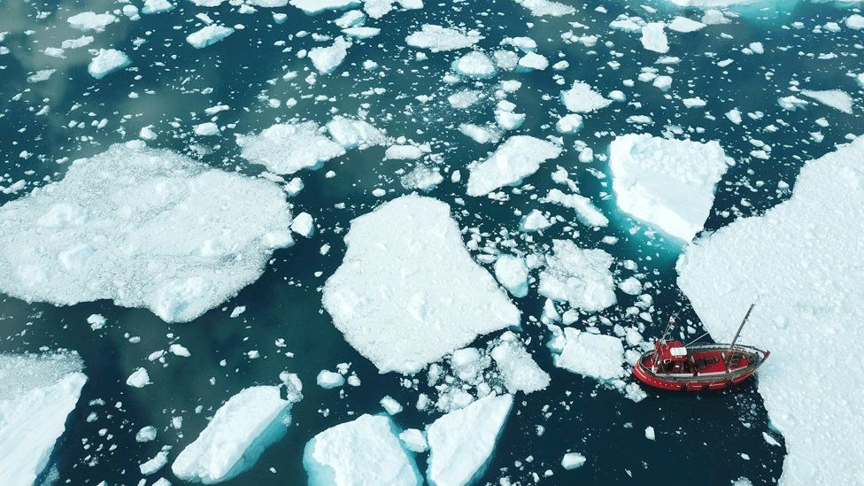

Bonus: Arctic Happenings
Arctic Happenings is a four-part educational module series designed for upper middle school, high school, and undergraduate students.
Global Impacts of the Melting Greenland Ice Sheet and Melting Sea Ice

The “Dataset”
These materials were created by Dr. Missy Holzer and Dr. Åsa Rennermalm. Dr. Holzer (she/her) is a veteran high school teacher of Earth & Space Science, Physical Geography, and AP Environmental Science in Chatham, NJ. Dr. Rennermalm (she/her) is an associate professor of Geography at Rutgers University.
All digital materials and the publication for this module are freely available online and include rich video and data resources plus step-by-step instructions.
This teaching module consists of four activities which all comply with the Next Generation Science Standards for grades 6-8 and 9-12:
Activity 1: My Burning Feet (Engage) This activity has students using infrared thermometers to introduce them to the concept of surface albedo (the proportion of light reflected by a surface from 0-1).
Activity 2: From burning feet to the Greenland Ice Sheet: Examining model estimates of Greenland ice sheet mass loss, its drivers, and its impact on global sea levels (Explore and Explain) This activity has students modeling and analyzing Greenland ice sheet spatial datasets with ImageJ software. Real data from the Modele Atmospherique Regional (MAR) helps student simulate atmosphere-land mass and energy fluxes over Greenland.
Activity 3: Should I Move Inland? What About Others Around the World - Should They Move to Higher Ground? (Elaborate) This activity has students investigating sea level rise in the coastal US, creating a report from the presepctive of a governmental researcher, and presenting their findings.
Activity 4: How Does Melting Arctic Ice (sea ice & ice sheets) Impact the Climate Where I live? (Evaluate) This activity has students synthesizing what they’ve learned in the previous three modules and extending that to Arctic sea ice, bringing in real data to back up their hypotheses.